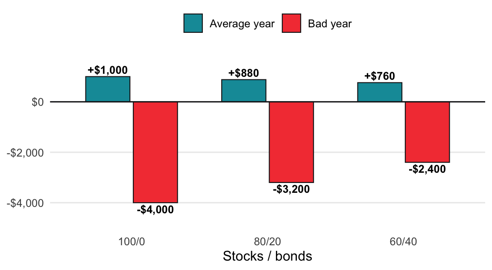
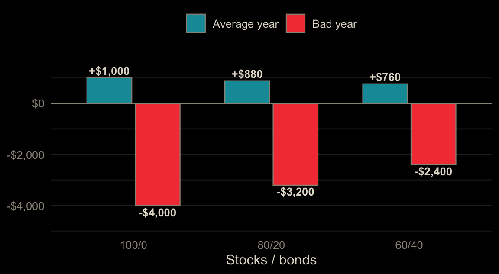
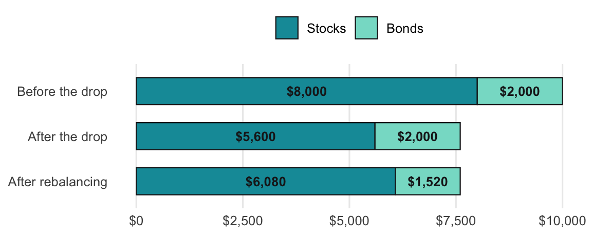
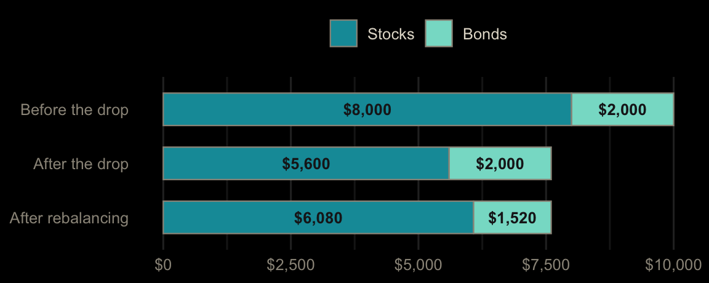

Each topic starts with a real scenario and a bar model, then three levels of exercises. Level 1 (Guided) fills in the blanks of a finished function. Level 2 (Practice) applies it to new numbers. Level 3 (Challenge) asks a new question with little scaffolding. The R and Python exercises run in your browser: click Run Code to try, Submit Answer to check, and use the hint or solution if you get stuck. Excel exercises have a solution you can reveal.
A portfolio’s return is a weighted average of what each part earns.
Formula: Portfolio return = (Stock % × Stock return) + (Bond % × Bond return)
Example (stocks +10% average, −40% bad; bonds +4% average, 0% bad): an 80/20 split in a bad year is (0.80 × −40%) + (0.20 × 0%) = −32%, or −$3,200 on $10,000. In an average year it’s (0.80 × 10%) + (0.20 × 4%) = 8.8%, or +$880.


The second example adds more splits and two columns compared with 100/0: the average year gain you give up and the bad year loss you avoid. The third uses the real 2008 numbers from the book (stocks about −37%, bonds about +5%), where bonds actually went up.
Read the two columns together. Going from 100/0 to 60/40 gives up $240 in an average year but cuts the bad year loss from $4,000 to $2,400. Each step toward bonds trades a little growth for a softer fall.
Fill in the blanks to finish portfolio_return(), then find the return of an 80/20 portfolio in a bad year (stocks −40%, bonds 0%). Give a decimal.
Put the stock share in A2 (0.8), the stock return in B2 (-0.40), and the bond return in C2 (0). Find the portfolio return in D2.
=A2*B2 + (1-A2)*C2This returns -0.32, a loss of $3,200 on $10,000.
#| exercise: mix_1_py
def portfolio_return(stock_pct, stock_return, bond_return):
return stock_pct * stock_return + (1 - ______) * ______
portfolio_return(0.80, -0.40, 0)Whatever isn’t in stocks is in bonds, and earns the bond return.
Solution.
def portfolio_return(stock_pct, stock_return, bond_return):
return stock_pct * stock_return + (1 - stock_pct) * bond_return
portfolio_return(0.80, -0.40, 0)#| exercise: mix_1_py
#| check: true
if result is not None and abs(result - -0.32) < 1e-09:
feedback = {"correct": True, "message": "Right: -32%. Bonds softened a -40% year."}
else:
feedback = {"correct": False, "message": "Not quite. The bond share is 1 - stock_pct."}
feedback#| exercise: mix_1_r
portfolio_return <- function(stock_pct, stock_return, bond_return) {
stock_pct * stock_return + (1 - ______) * ______
}
portfolio_return(0.80, -0.40, 0)Whatever isn’t in stocks is in bonds, and earns the bond return.
Solution.
portfolio_return <- function(stock_pct, stock_return, bond_return) {
stock_pct * stock_return + (1 - stock_pct) * bond_return
}
portfolio_return(0.80, -0.40, 0)#| exercise: mix_1_r
#| check: true
if (isTRUE(abs(as.numeric(.result) - -0.32) < 1e-09)) {
list(correct = TRUE, message = "Right: -32%. Bonds softened a -40% year.")
} else {
list(correct = FALSE, message = "Not quite. The bond share is 1 - stock_pct.")
}A 60/40 portfolio of $10,000 has an average year (stocks +10%, bonds +4%). How many dollars does it gain?
Change A2 to 0.6, B2 to 0.10, and C2 to 0.04, then turn the return into dollars.
=10000 * (A2*B2 + (1-A2)*C2)This returns $760, versus $1,000 for all stocks.
#| exercise: mix_2_py
#| setup: true
def portfolio_return(stock_pct, stock_return, bond_return):
return stock_pct * stock_return + (1 - stock_pct) * bond_return#| exercise: mix_2_py
10000 * portfolio_return(______)Stock share 0.60, stock return 0.10, bond return 0.04.
Solution.
10000 * portfolio_return(0.60, 0.10, 0.04)#| exercise: mix_2_py
#| check: true
if result is not None and abs(result - 760) < 0.01:
feedback = {"correct": True, "message": "Right: $760, giving up $240 of an average year for a smaller bad year."}
else:
feedback = {"correct": False, "message": "Not quite. Use 0.60, 0.10, and 0.04."}
feedback#| exercise: mix_2_r
#| setup: true
portfolio_return <- function(stock_pct, stock_return, bond_return) {
stock_pct * stock_return + (1 - stock_pct) * bond_return
}#| exercise: mix_2_r
10000 * portfolio_return(______)Stock share 0.60, stock return 0.10, bond return 0.04.
Solution.
10000 * portfolio_return(0.60, 0.10, 0.04)#| exercise: mix_2_r
#| check: true
if (isTRUE(abs(as.numeric(.result) - 760) < 0.01)) {
list(correct = TRUE, message = "Right: $760, giving up $240 of an average year for a smaller bad year.")
} else {
list(correct = FALSE, message = "Not quite. Use 0.60, 0.10, and 0.04.")
}In 2008, stocks fell about 37% and bonds rose about 5%. Of the splits 100/0, 90/10, 80/20, 60/40, 40/60, and 0/100, what is the highest stock share that kept the 2008 loss to 15% or less? Give a decimal.
Put the stock shares in A2:A7, the 2008 return in B, and find the largest share with a return of -15% or better.
In B2, filled down: =A2*-0.37 + (1-A2)*0.05. Then:
=MAXIFS(A2:A7, B2:B7, ">=-0.15")The answer is 0.4 (a 40/60 portfolio lost 11.8%).
#| exercise: mix_3_py
#| setup: true
def portfolio_return(stock_pct, stock_return, bond_return):
return stock_pct * stock_return + (1 - stock_pct) * bond_return#| exercise: mix_3_py
splits = [1, 0.9, 0.8, 0.6, 0.4, 0]
# highest stock share with a 2008 return of -0.15 or betterUse max(s for s in splits if portfolio_return(s, -0.37, 0.05) >= -0.15).
Solution.
splits = [1, 0.9, 0.8, 0.6, 0.4, 0]
max(s for s in splits if portfolio_return(s, -0.37, 0.05) >= -0.15)#| exercise: mix_3_py
#| check: true
if result is not None and abs(result - 0.4) < 1e-09:
feedback = {"correct": True, "message": "Right: 40/60. Even 60/40 lost about 20% in 2008."}
else:
feedback = {"correct": False, "message": "Not quite. A loss of 15% or less means a return of -0.15 or higher."}
feedback#| exercise: mix_3_r
#| setup: true
portfolio_return <- function(stock_pct, stock_return, bond_return) {
stock_pct * stock_return + (1 - stock_pct) * bond_return
}#| exercise: mix_3_r
splits <- c(1, 0.9, 0.8, 0.6, 0.4, 0)
# highest stock share with a 2008 return of -0.15 or betterportfolio_return() is vectorized: pass all splits, then max(splits[...]).
Solution.
splits <- c(1, 0.9, 0.8, 0.6, 0.4, 0)
returns <- portfolio_return(splits, -0.37, 0.05)
max(splits[returns >= -0.15])#| exercise: mix_3_r
#| check: true
if (isTRUE(abs(as.numeric(.result) - 0.4) < 1e-09)) {
list(correct = TRUE, message = "Right: 40/60. Even 60/40 lost about 20% in 2008.")
} else {
list(correct = FALSE, message = "Not quite. A loss of 15% or less means a return of -0.15 or higher.")
}When one part grows or shrinks, move just enough to get back to the target split.
Formula: Amount to move = (Target % × Total) − Current amount
Example: $10,000 at 80/20, then stocks drop 30%. Stocks are $5,600, bonds $2,000, total $7,600 (stocks about 74%). (0.80 × $7,600) − $5,600 = $480 moved from bonds into stocks.


The second example runs several stock moves, up and down, and applies the book’s 5 percentage point rule to decide whether to act at all. A negative amount means sell stocks and buy bonds. The last example rebalances with new money only, so nothing gets sold.
Read a positive answer as “buy that much stock,” and a negative answer as “sell that much stock.” A 10% drop only moves the split about 2 points, so the 5 point rule says wait. With $1,000 of new money after the 30% drop, the full $1,000 goes to stocks and the gap closes from $480 to under $300 without selling anything.
Fill in the blanks to finish rebalance_amount(). A $10,000 80/20 portfolio has $5,600 in stocks and $2,000 in bonds after a 30% stock drop. How much should move into stocks?
Put the target in A2 (0.8), stocks in B2 (5600), and bonds in C2 (2000). Find the amount to move in D2.
=A2*(B2+C2) - B2This returns $480: sell $480 of bonds and buy stocks.
#| exercise: rebal_1_py
def rebalance_amount(target_pct, total, current_amount):
return ______ * total - ______
rebalance_amount(0.80, 5600 + 2000, 5600)Where you should be (target × total) minus where you are.
Solution.
def rebalance_amount(target_pct, total, current_amount):
return target_pct * total - current_amount
rebalance_amount(0.80, 5600 + 2000, 5600)#| exercise: rebal_1_py
#| check: true
if result is not None and abs(result - 480) < 0.01:
feedback = {"correct": True, "message": "Right: move $480 from bonds into stocks, buying low."}
else:
feedback = {"correct": False, "message": "Not quite. Target share times total, minus what's in stocks now."}
feedback#| exercise: rebal_1_r
rebalance_amount <- function(target_pct, total, current_amount) {
______ * total - ______
}
rebalance_amount(0.80, 5600 + 2000, 5600)Where you should be (target × total) minus where you are.
Solution.
rebalance_amount <- function(target_pct, total, current_amount) {
target_pct * total - current_amount
}
rebalance_amount(0.80, 5600 + 2000, 5600)#| exercise: rebal_1_r
#| check: true
if (isTRUE(abs(as.numeric(.result) - 480) < 0.01)) {
list(correct = TRUE, message = "Right: move $480 from bonds into stocks, buying low.")
} else {
list(correct = FALSE, message = "Not quite. Target share times total, minus what's in stocks now.")
}Now stocks rise 30% instead: $10,400 in stocks and $2,000 in bonds. How much should move? (A negative answer means sell stocks.)
Change B2 to 10400.
The same formula returns -$480: sell $480 of stocks and buy bonds, selling high.
#| exercise: rebal_2_py
#| setup: true
def rebalance_amount(target_pct, total, current_amount):
return target_pct * total - current_amount#| exercise: rebal_2_py
rebalance_amount(______)The total is 10400 + 2000, and the current stock amount is 10400.
Solution.
rebalance_amount(0.80, 10400 + 2000, 10400)#| exercise: rebal_2_py
#| check: true
if result is not None and abs(result - -480) < 0.01:
feedback = {"correct": True, "message": "Right: sell $480 of stocks. Rebalancing sells high as well as buying low."}
else:
feedback = {"correct": False, "message": "Not quite. Total is 12,400; stocks are 10,400."}
feedback#| exercise: rebal_2_r
#| setup: true
rebalance_amount <- function(target_pct, total, current_amount) {
target_pct * total - current_amount
}#| exercise: rebal_2_r
rebalance_amount(______)The total is 10400 + 2000, and the current stock amount is 10400.
Solution.
rebalance_amount(0.80, 10400 + 2000, 10400)#| exercise: rebal_2_r
#| check: true
if (isTRUE(abs(as.numeric(.result) - -480) < 0.01)) {
list(correct = TRUE, message = "Right: sell $480 of stocks. Rebalancing sells high as well as buying low.")
} else {
list(correct = FALSE, message = "Not quite. Total is 12,400; stocks are 10,400.")
}The book’s rule: only rebalance when stocks drift more than 5 percentage points from the 80% target. Starting from $8,000 stocks and $2,000 bonds, stocks move −30%, −10%, −5%, +10%, or +30%. In how many of those cases should you rebalance?
Put the moves in A2:A6. Find stocks, the stock share, and the drift, then count drifts over 5 points.
Stocks in B2: =8000*(1+A2). Share in C2: =B2/(B2+2000)*100. Drift in D2: =ABS(C2-80). Fill down, then =COUNTIF(D2:D6, ">5") returns 1. Only the 30% drop (73.7% stocks) crosses the band.
#| exercise: rebal_3_py
#| setup: true
import pandas as pd
moves = pd.DataFrame({"stock_move": [-0.30, -0.10, -0.05, 0.10, 0.30]})#| exercise: rebal_3_py
# add stocks, share, and drift columns, then count drifts over 5 pointsstocks = 8000 * (1 + stock_move), share is 100 * stocks / (stocks + 2000), drift is (share - 80).abs().
Solution.
moves["stocks"] = 8000 * (1 + moves["stock_move"])
moves["share"] = 100 * moves["stocks"] / (moves["stocks"] + 2000)
moves["drift"] = (moves["share"] - 80).abs()
(moves["drift"] > 5).sum()#| exercise: rebal_3_py
#| check: true
if result is not None and abs(result - 1) < 0.001:
feedback = {"correct": True, "message": "Right: just 1. Even a 30% rise only drifts stocks to 83.9%."}
else:
feedback = {"correct": False, "message": "Not quite. Drift is the distance between the stock share and 80, in points."}
feedback#| exercise: rebal_3_r
#| setup: true
library(dplyr)
moves <- data.frame(stock_move = c(-0.30, -0.10, -0.05, 0.10, 0.30))#| exercise: rebal_3_r
# add stocks, share, and drift columns, then count drifts over 5 pointsmutate(stocks = 8000 * (1 + stock_move), share = 100 * stocks / (stocks + 2000), drift = abs(share - 80)), then filter(drift > 5) and nrow().
Solution.
moves |>
mutate(
stocks = 8000 * (1 + stock_move),
share = 100 * stocks / (stocks + 2000),
drift = abs(share - 80)
) |>
filter(drift > 5) |>
nrow()#| exercise: rebal_3_r
#| check: true
if (isTRUE(abs(as.numeric(.result) - 1) < 0.001)) {
list(correct = TRUE, message = "Right: just 1. Even a 30% rise only drifts stocks to 83.9%.")
} else {
list(correct = FALSE, message = "Not quite. Drift is the distance between the stock share and 80, in points.")
}